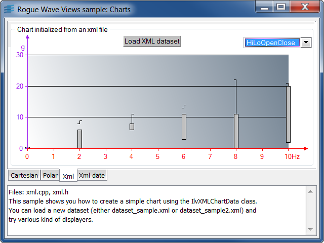

cartesianCreation of a simple Cartesian chart with several displayers.
This sample shows how to create a simple Cartesian chart using the
IlvCartesianChart class. Once created, the chart is used to display three
data sets using a standard displayer: IlvPolylineChartDisplayer.
IlvCartesianChartIlvChartPointSetIlvPolylineChartDisplayerpolarCreation of a simple polar chart with several displayers.
This sample shows how to create a chart using a polar projector. To do so, it
uses the IlvPolarChart class.
Note the two different scale types: rectangular for the rho coordinate that is displayed radially, and circular for the theta coordinate.
Two callback functions are used as input data and are rendered with two displayers:
y = abs(2*sin(2x)).y = abs(sin(3x)).IlvPolarChartIlvCallbackChartFunctionIlvPolygonChartDisplayerIlvBarChartDisplayerxmlCreation of a simple Cartesian chart out of an XML data file.
This sample shows you how to create a simple
chart using the IlvXMLChartData class. You can load a
new dataset (either dataset_sample.xml or
dataset_sample2.xml) and try various kind of displayers.
IlvXMLChartDataIlvChartPointSetIlvPolylineChartDisplayerIlvBarChartDisplayerIlvHiLoChartDisplayerIlvHiLoBarChartDisplayerIlvHiLoOpenCloseChartDisplayer../include/samputil.h../src/samputil.cppsrc/xml.cppdata/dataset_sample.xmldata/dataset_sample2.xmlxml_dateCreation of a Cartesian chart out of an XML data file defining dates.

This sample shows you how to extract dates from an XML data file using the
IlvXMLChartData class.
IlvXMLChartDataIlvChartPointSetIlvPolylineChartDisplayer